2-11막 · 에게해의 바위 만
한국어 번역은 독일어 원문에 대응하는 자동 번역 초안입니다.
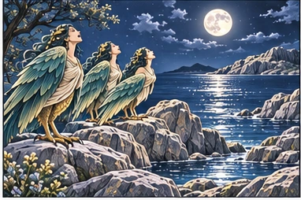
독일어 원문 · 한국어 번역
Felsbuchten des ägäischen Meers
SIRENEN:
Haben sonst bei nächtigem Grauen
Dich thessalische Zauberfrauen
Frevelhaft herabgezogen,에게해의 바위만 사이렌: 그렇지 않으면 밤에 공포를 느낄 것이다 테살리아의 마법 여인들아 신성하게 무너진,
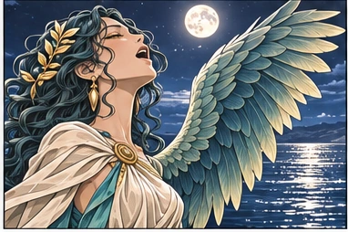
독일어 원문 · 한국어 번역
Blicke ruhig von dem Bogen
Deiner Nacht auf Zitterwogen
Mildeblitzend Glanzgewimmel
Und erleuchte das Getümmel,아치에서 침착하게 바라보기 흔들리는 파도 위의 너의 밤 은은하게 반짝이는 글리터 떼 그리고 혼란을 밝히고,
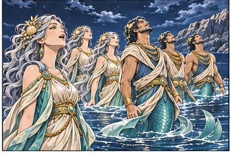
독일어 원문 · 한국어 번역
Das sich aus den Wogen hebt!
Dir zu jedem Dienst erbötig,
Schöne Luna, sei uns gnädig!
NEREIDEN UND TRITONEN:
Tönet laut in schärfern Tönen,파도 위로 떠오르는 것! 어떤 서비스든 이용할 수 있으며, 아름다운 루나여, 우리를 불쌍히 여겨주세요! 네레이드와 트리톤: 더 날카로운 톤으로 크게 들립니다.
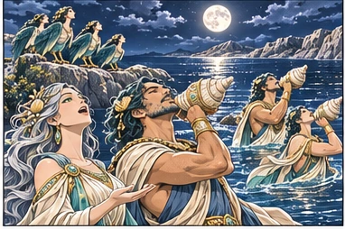
독일어 원문 · 한국어 번역
Die das breite Meer durchdröhnen,
Volk der Tiefe ruft fortan!
Vor des Sturmes grausen Schlünden
Wichen wir zu stillsten Gründen,넓은 바다를 가로지르는 저 고리, 지금부터 심해의 사람들이 부른다! Maws는 폭풍을 두려워한다 가장 조용한 이유로 후퇴하자.
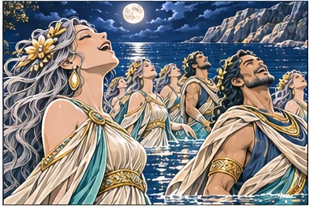
독일어 원문 · 한국어 번역
Holder Sang zieht uns heran.
Seht, wie wir im Hochentzücken
Uns mit goldenen Ketten schmücken,
Auch zu Kron' und Edelsteinen홀더 상이 우리를 더 가까이 끌어당깁니다. 우리가 얼마나 신나는지 보세요 황금 사슬로 우리 자신을 장식하고, 왕관과 보석에도 사용됩니다.
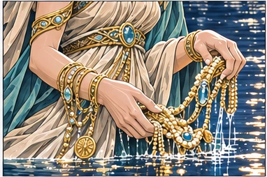
독일어 원문 · 한국어 번역
Spang- und Gürtelschmuck vereinen!
Alles das ist eure Frucht.
Schätze, scheiternd hier verschlungen,
Habt ihr uns herangesungen,걸쇠와 벨트 주얼리를 결합해보세요! 이 모든 것이 당신의 열매입니다. 보물은 여기서 실패하고, 삼켜지고, 우리에게 노래를 불러주셨나요?
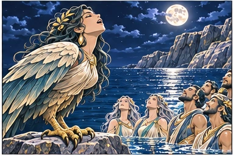
독일어 원문 · 한국어 번역
Ihr Dämonen unsrer Bucht.
SIRENEN:
Wissen's wohl, in Meeresfrische
Glatt behagen sich die Fische,
Schwanken Lebens ohne Leid;너희 만의 악마들아. 사이렌: 아시다시피, 바다의 신선함 속에서 물고기는 편안하고, 고통없는 생명의 예방 접종;
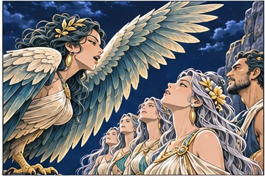
독일어 원문 · 한국어 번역
Doch, ihr festlich regen Scharen,
Heute möchten wir erfahren,
Daß ihr mehr als Fische seid.
NEREIDEN UND TRITONEN:
Ehe wir hieher gekommen,그렇다, 너희 축제 군중들아, 오늘 우리는 알아보고 싶습니다. 당신은 물고기 이상의 존재입니다. 네레이드와 트리톤: 우리가 여기 오기 전에,
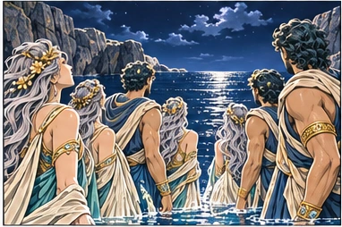
독일어 원문 · 한국어 번역
Haben wir's zu Sinn genommen;
Schwestern, Bur*der, jetzt geschwind!
Heut bedarf's der kleinsten Reise
Zum vollgültigsten Beweise,우리는 그것을 마음에 새겼습니까? 자매님들, 형제님들, 지금 서둘러주세요! 오늘 우리는 가장 작은 여행이 필요합니다 가장 완벽한 증명을 위해,
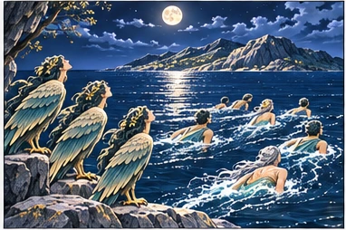
독일어 원문 · 한국어 번역
Daß wir mehr als Fische sind.
SIRENEN:
Fort sind sie im Nu!
Nach Samothrace grade zu,
Verschwunden mit günstigem Wind.우리는 물고기 이상의 존재입니다. 사이렌: 그들은 곧 사라질 것입니다! 바로 사모트라케로, 순풍과 함께 사라졌습니다.
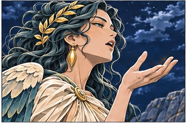
독일어 원문 · 한국어 번역
Was denken sie zu vollführen
Im Reiche der hohen Kabiren?
Sind Götter! Wundersam eigen,
Die sich immerfort selbst erzeugen그들은 무엇을 성취할 것이라고 생각합니까? 높은 카비르의 영역에서요? 신이다! 기적적으로 소유하고, 지속적으로 스스로를 생성하는
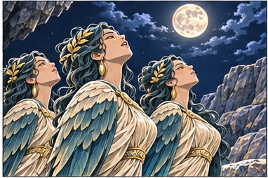
독일어 원문 · 한국어 번역
Und niemals wissen, was sie sind.
Bleibe auf deinen Höhn,
Holde Luna, gnädig stehn,
Daß es nächtig verbleibe,그리고 그들이 무엇인지 결코 알지 못합니다. 경멸을 계속하세요. 사랑하는 루나님, 우아하게 서세요. 밤새도록 남아 있을 수 있도록,
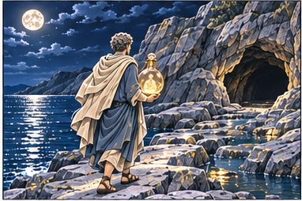
독일어 원문 · 한국어 번역
Uns der Tag nicht vertreibe!
THALES:
Ich führte dich zum alten Nereus gern;
Zwar sind wir nicht von seiner Höhle fern,
Doch hat er einen harten Kopf,그날이 우리를 지나가게 놔두지 마세요! 탈레스: 나는 당신을 늙은 네레우스에게 데려가서 기뻤습니다. 그의 동굴이 그리 멀지는 않지만, 하지만 그 사람은 머리가 나빠서
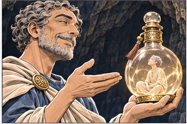
독일어 원문 · 한국어 번역
Der widerwärtige Sauertopf.
Das ganze menschliche Geschlecht
Macht's ihm, dem Griesgram, nimmer recht.
Doch ist die Zukunft ihm entdeckt,역겨운 신맛. 인류 전체 그 구두쇠는 결코 그를 기쁘게 하지 않습니다. 하지만 그에게는 미래가 발견되었습니다.
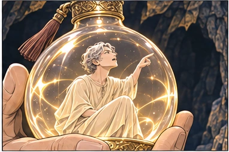
독일어 원문 · 한국어 번역
Dafür hat jedermann Respekt
Und ehret ihn auf seinem Posten;
Auch hat er manchem wohlgetan.
HOMUNCULUS:
Probieren wir's und klopfen an!다들 그걸 존경해요 그리고 그의 직위에서 그를 존경하십시오. 그는 또한 좋은 일을 했습니다. 호문쿨루스: 해보고 노크하자!
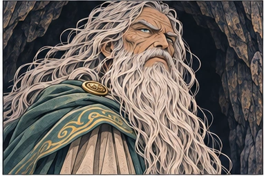
독일어 원문 · 한국어 번역
Nicht gleich wird's Glas und Flamme kosten.
NEREUS:
Sind's Menschenstimmen, die mein Ohr vernimmt?
Wie es mir gleich im tiefsten Herzen grimmt!
Gebilde, strebsam, Götter zu erreichen,당장 유리와 불꽃이 들지는 않습니다. 네레우스: 내 귀에 들리는 것은 사람의 목소리인가? 나는 내 마음 속 깊은 곳에서 얼마나 화가 났습니까! 신에게 다가가려고 애쓰는 생물들,
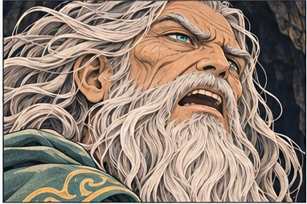
독일어 원문 · 한국어 번역
Und doch verdammt, sich immer selbst zu gleichen.
Seit alten Jahren konnt' ich göttlich ruhn,
Doch trieb mich's an, den Besten wohlzutun;
Und schaut' ich dann zuletzt vollbrachte Taten,그럼에도 불구하고 항상 자신을 닮을 운명입니다. 예로부터 나는 신령한 안식을 누렸으니 그러나 나는 최선을 다해 선한 일을 하려는 충동을 느꼈습니다. 그리고 마지막으로 성취된 업적을 보면,
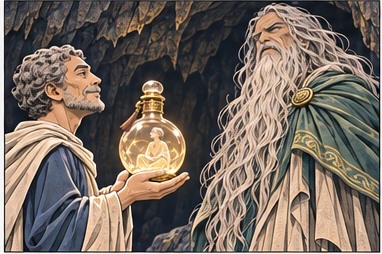
독일어 원문 · 한국어 번역
So war es ganz, als hätt' ich nicht geraten.
THALES:
Und doch, o Greis des Meers, vertraut man dir;
Du bist der Weise, treib uns nicht von hier!
Schau diese Flamme, menschenähnlich zwar,그래서 추측하지 못한 것 같았습니다. 탈레스: 그러나 오 바다의 노인이여, 당신은 신뢰를 받고 있습니다. 당신은 현명한 사람입니다. 우리를 여기서 몰아내지 마십시오! 보라, 이 불꽃은 정말 인간과 비슷하다.
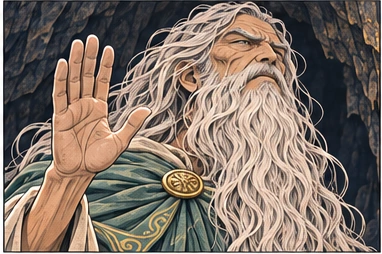
독일어 원문 · 한국어 번역
Sie deinem Rat ergibt sich ganz und gar.
NEREUS:
Was Rat! Hat Rat bei Menschen je gegolten?
Ein kluges Wort erstarrt im harten Ohr.
So oft auch Tat sich grimmig selbst gescholten,그녀는 당신의 조언에 완전히 굴복합니다. 네레우스: 무슨 조언입니까! 사람들에게 조언이 유효했던 적이 있었나요? 현명한 말은 딱딱한 귀에 얼어 붙습니다. 타트가 아무리 자주 자신을 엄하게 꾸짖더라도,
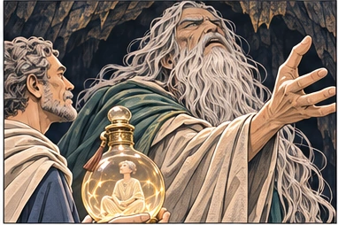
독일어 원문 · 한국어 번역
Bleibt doch das Volk selbstwillig wie zuvor.
Wie hab' ich Paris väterlich gewarnt,
Eh sein Gelüst ein fremdes Weib umgarnt.
Am griechischen Ufer stand er kühnlich da,사람들은 이전과 마찬가지로 자기 의지를 유지합니다. 나는 아버지처럼 파리에게 어떻게 경고했는가 그의 욕망이 낯선 여자를 함정에 빠뜨리기 전에. 그리스 해안에 그는 담대히 서 있었습니다.

독일어 원문 · 한국어 번역
Ihm kündet' ich, was ich im Geiste sah:
Die Lüfte qualmend, überströmend Rot,
Gebälke glühend, unten Mord und Tod:
Trojas Gerichtstag, rhythmisch festgebannt,나는 영적으로 본 것을 그에게 말했습니다. 공기는 연기가 나고, 붉은색이 넘쳐 흐르고, 빛나는 광선, 살인과 죽음이 아래에 있습니다: 리드미컬하게 포착한 트로이의 심판날,

독일어 원문 · 한국어 번역
Jahrtausenden so schrecklich als gekannt.
Des Alten Wort, dem Frechen schien's ein Spiel,
Er folgte seiner Lust, und Ilios fiel--
Ein Riesenleichnam, starr nach langer Qual,수천년 동안 그 어느 때보다 더 끔찍했습니다. 옛말로, 뻔뻔한 말로는 게임 같았지만 그는 그의 욕망을 따랐고, 일리오스는 쓰러졌다-- 오랜 고통 끝에 굳어버린 거대한 시체,

독일어 원문 · 한국어 번역
Des Pindus Adlern gar willkommnes Mahl.
Ulyssen auch! sagt' ich ihm nicht voraus
Der Circe Listen, des Zyklopen Graus?
Das Zaudern sein, der Seinen leichten Sinn,핀두스 독수리를 위한 매우 환영받는 식사입니다. 율리시스도! 나는 그 사람에게 그것을 예측하지 않았다 키르케(Circe) 들어보세요, 사이클롭스 그레이(Cyclops Grey)? 머뭇거리는 마음, 가벼운 마음으로,

독일어 원문 · 한국어 번역
Und was nicht alles! Bracht' ihm das Gewinn?
Bis vielgeschaukelt ihn, doch spät genug,
Der Woge Gunst an gastlich Ufer trug.
THALES:
Dem weisen Mann gibt solch Betragen Qual;그리고 그렇지 않습니다! 그게 그에게 이익을 가져다 주었나요? 그가 많이 흔들릴 때까지, 그러나 충분히 늦었지만, 파도는 친절한 해안에 호의를 가져다주었습니다. 탈레스: 현명한 사람에게는 그러한 행위가 고통을 안겨준다.

독일어 원문 · 한국어 번역
Der gute doch versucht es noch einmal.
Ein Quentchen Danks wird, hoch ihn zu vergnügen,
Die Zentner Undanks völlig überwiegen.
Denn nichts Geringes haben wir zu flehn:좋은 사람이 다시 시도합니다. 약간의 감사는 그를 행복하게 만드는 데 큰 도움이 될 것입니다 백배의 배은망덕이 완전히 지배적입니다. 우리는 기도할 것이 적지 않습니다.

독일어 원문 · 한국어 번역
Der Knabe da wünscht weislich zu entstehn.
NEREUS:
Verderbt mir nicht den seltensten Humor!
Ganz andres steht mir heute noch bevor:
Die Töchter hab' ich alle herbeschieden,거기 소년은 현명하게 태어나고 싶어한다. 네레우스: 내 가장 희귀한 유머를 망치지 마세요! 오늘도 완전히 다른 일이 나를 기다리고 있습니다. 딸들을 모두 여기로 데려왔으니

독일어 원문 · 한국어 번역
Die Grazien des Meeres, die Doriden.
Nicht der Olymp, nicht euer Boden trägt
Ein schön Gebild, das sich so zierlich regt.
Sie werfen sich, anmutigster Gebärde,바다의 은혜, 도리데스. 올림푸스도 아니고 당신의 땅도 아닙니다 매우 섬세하게 움직이는 아름다운 구조. 그들은 가장 우아한 몸짓으로 몸을 던진다.

독일어 원문 · 한국어 번역
Vom Wasserdrachen auf Neptunus' Pferde,
Dem Element aufs zarteste vereint,
Daß selbst der Schaum sie noch zu heben scheint.
Im Farbenspiel von Venus' Muschelwagen수룡부터 넵투누스의 말까지, 가장 섬세하게 결합된 요소, 거품조차도 그녀를 들어 올리는 것 같습니다. 비너스의 조개 전차의 색깔 놀이에서

독일어 원문 · 한국어 번역
Kommt Galatee, die Schönste, nun getragen,
Die, seit sich Kypris von uns abgekehrt,
In Paphos wird als Göttin selbst verehrt.
Und so besitzt die Holde lange schon,이제 가장 아름다운 갈라테이가 온다, 키프리스가 우리를 외면한 이후로 파포스에서는 여신 자신이 숭배됩니다. 그래서 그 아름다운 여인은 오랫동안

독일어 원문 · 한국어 번역
Als Erbin, Tempelstadt und Wagenthron.
Hinweg! Es ziemt in Vaterfreudenstunde
Nicht Haß dem Herzen, Scheltwort nicht dem Munde.
Hinweg zu Proteus! Fragt den Wundermann:상속녀, 사원 도시 및 전차 왕좌. 떨어져 있는! 아버지의 기쁨의 시간에 딱 맞습니다 마음을 미워하지 말고, 입을 책망하지 마십시오. 프로테우스를 향해! 기적의 남자에게 물어보세요.

독일어 원문 · 한국어 번역
Wie man entstehn und sich verwandlen kann.
THALES:
Wir haben nichts durch siesen Schritt gewonnen,
Trifft man auch Proteus, gleich ist er zerronnen;
Und steht er euch, so sagt er nur zuletzt,출현하고 변화하는 방법. 탈레스: 이 단계에서 우리는 아무것도 얻지 못했습니다. 프로테우스도 때리면 그는 즉시 사라질 것입니다. 그리고 그가 당신에게 적합하다면 그는 마지막으로 이렇게 말합니다.

독일어 원문 · 한국어 번역
Was staunen macht und in Verwirrung setzt.
Du bist einmal bedürftig solchen Rats,
Versuchen wir's und wandlen unsres Pfads!
SIRENEN:
Was sehen wir von weiten놀랍고 혼란스러운 것. 이런 조언이 필요하신 분, 그것을 시도하고 우리의 길을 따르자! 사이렌: 멀리서 우리는 무엇을 보나요?

독일어 원문 · 한국어 번역
Das Wellenreich durchgleiten?
Als wie nach Windes Regel
Anzögen weiße Segel,
So hell sind sie zu schauen,파도 왕국을 활공하시겠습니까? 마치 Winde의 법칙에 따른 것처럼 하얀 돛을 달고, 보기에는 너무 밝아서,

독일어 원문 · 한국어 번역
Verklärte Meeresfrauen.
Laßt uns herunterklimmen,
Vernehmt ihr doch die Stimmen.
NEREIDEN UND TRITONEN:
Was wir auf Händen tragen,변신한 바다의 여인들. 내려가자, 목소리가 들리나요? 네레이드와 트리톤: 우리가 손에 들고 있는 것은

독일어 원문 · 한국어 번역
Soll allen euch behagen.
Chelonens Riesenschilde
Entglänzt ein streng Gebilde:
Sind Götter, die wir bringen;모두를 편안하게 해줘야 합니다. 첼로넨의 거대한 방패 엄격한 구조가 빛을 발하는 경우: 우리가 가져오는 신들은 무엇입니까?

독일어 원문 · 한국어 번역
Müßt hohe Lieder singen.
SIRENEN:
Klein von Gestalt,
Groß von Gewalt,
Der Scheiternden Retter,높은 노래를 불러야 합니다. 사이렌: 키가 작고, 폭력에도 좋고, 실패한 구원자,

독일어 원문 · 한국어 번역
Uralt verehrte Götter.
NEREIDEN UND TRITONEN:
Wir bringen die Kabiren,
Ein friedlich Fest zu führen;고대에는 신들을 숭배했습니다. 네레이드와 트리톤: 우리는 Kabir을 가져옵니다. 평화로운 축하를 갖기 위해;

독일어 원문 · 한국어 번역
Denn wo sie heilig walten,
Neptun wird freundlich schalten.
SIRENEN:
Wir stehen euch nach;그들이 거룩하게 통치하는 곳에서는 Neptune은 친근한 방식으로 전환됩니다. 사이렌: 우리는 당신을 쫓고 있습니다.

독일어 원문 · 한국어 번역
Wenn ein Schiff zerbrach,
Unwiderstehbar an Kraft
Schützt ihr die Mannschaft.
배가 부서진 경우, 저항할 수 없는 힘 팀을 보호하시나요?